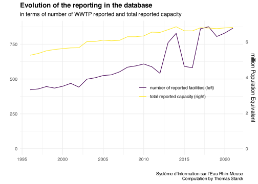
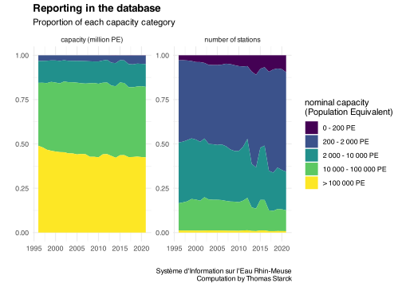
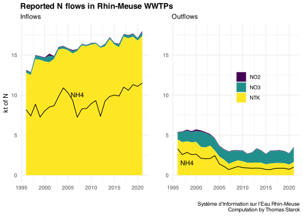
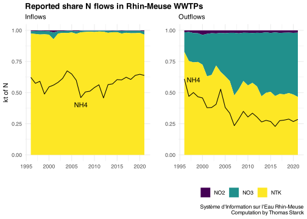

knitr::opts_chunk$set(warning=F, message=F, results=F, dev='svg')library(tidyverse) #loads multiple packages (see https://tidyverse.tidyverse.org/)#core tidyverse packages loaded:# ggplot2, for data visualisation. https://ggplot2.tidyverse.org/# dplyr, for data manipulation. https://dplyr.tidyverse.org/# tidyr, for data tidying. https://tidyr.tidyverse.org/# readr, for data import. https://readr.tidyverse.org/# purrr, for functional programming. https://purrr.tidyverse.org/# tibble, for tibbles, a modern re-imagining of data frames. https://tibble.tidyverse.org/# stringr, for strings. https://stringr.tidyverse.org/# forcats, for factors. https://forcats.tidyverse.org/# lubridate, for date/times. https://lubridate.tidyverse.org/#also loads the following packages (less frequently used):# Working with specific types of vectors:# hms, for times. https://hms.tidyverse.org/# Importing other types of data:# feather, for sharing with Python and other languages. https://github.com/wesm/feather# haven, for SPSS, SAS and Stata files. https://haven.tidyverse.org/# httr, for web apis. https://httr.r-lib.org/# jsonlite for JSON. https://arxiv.org/abs/1403.2805# readxl, for .xls and .xlsx files. https://readxl.tidyverse.org/# rvest, for web scraping. https://rvest.tidyverse.org/# xml2, for XML. https://xml2.r-lib.org/# Modelling# modelr, for modelling within a pipeline. https://modelr.tidyverse.org/# broom, for turning models into tidy data. https://broom.tidymodels.org/# Use the conflicted package (<http://conflicted.r-lib.org/>) to force all conflicts to become errors#loading additional relevant packageslibrary(cowplot) #for plot_grid()#setting graphs themetheme_set(theme_minimal() +theme(plot.title =element_text(face="bold") ) )Year_analysis <-2020#setting viridis theme for colorsscale_colour_continuous <- scale_colour_viridis_cscale_colour_discrete <- scale_colour_viridis_dscale_colour_binned <- scale_colour_viridis_b#setting viridis theme for fillscale_fill_continuous <- scale_fill_viridis_cscale_fill_discrete <- scale_fill_viridis_dscale_fill_binned <- scale_fill_viridis_bSource <-"Système d'Information sur l'Eau Rhin-Meuse\nComputation by Thomas Starck"# Load the function filesource("functions.R")
The data can be downloaded on Rhin-Meuse water agency platform, here, in the section Station d’épuration des eaux. Three kind of files are available.
In Statistiques annuelles are presented, from 1996 to 2014, for each waste water treatment plant, some statistics (median, mean, standard deviation, min, max, 10 and 90 percentile) about the following quantities : DBO5, DCO, MES, NTK, NH4, NO2, NO3, Pt. For each one is reported the incoming and outgoing load, concentration and yield. For our analysis we will focus on mean incoming and outgoing loads (in kg/day).
In Données élémentaires, the same quantities are presented, but are not statistically summarized. For instance there can be several incoming P measures in a given year for a given wastewater treatment plant, sometimes one for each day. We do not use it and we will only use the Statistique annuelles table. For further work, the tables in Données élémentaires could be used to have more granular data, especially for large waste water treatment plants with frequent reporting.
The table Référentiel des ouvrages presents some characteristics of the waste water treatment plant : nominal capacity, location (long and lat), city, waterway, etc.
These open data stop in 2014. The agency sent us a file for the most recent period, spanning 2010-2020.
Information about the basin ca be found in the “Etat des lieux 2019” (status report).
There are 4.3 million inhabitants in the basin. A total of 995 waste water treatment plants, for a total nominal capacity of almost 8 million population equivalent. 255 000 inhabitants not connected to sewers, who use an Individual Autonomous System (IAS).
More description in the “Guide de l’eau” (water guide) here and here.
We load the files related to pollutions and WWTP descriptions from 1996 to 2014. We convert the nominal capacity, reported in kgDBO5/day, into population equivalent (PE) by using the ration 1 PE = 0.06 kgDBO5 (source). Notice that the nominal capacity might have changed between 1996 and 2014, and that the reported value is probably more accurate for the last years.
Code
#getting main data from the tables "statistiques annuelles"path_source <-"source_data/02_rhin_meuse/online_1990_2014/statistiques_annuelles/"file_rhin_meuse_1996_2014 <-#read and merge csv of all yearslist.files( path = path_source,pattern ="*.csv", full.names = T, recursive = T ) %>%lapply( read_csv2, locale=locale(encoding="latin1"), skip=1 ) %>%bind_rows()file_rhin_meuse_1996_2014 <- file_rhin_meuse_1996_2014 %>%distinct() # apparently no double reporting#Getting WWTP capacity from the table "referentiel ouvrage"path_source <-"source_data/02_rhin_meuse/online_1990_2014/referentiel_ouvrage/"file_WWTP_1996_2014 <-read_csv2(paste( path_source, "EPU_STATIONS.csv", sep="" ), locale=locale(encoding="latin1") )WWTP_1996_2014 <- file_WWTP_1996_2014 %>%select(code_WWTP =`Code SANDRE`, capacity =`Capacité nominale`,name_commune =`Commune d'implantation`,INSEE_COM =`Code insee commune`,lat_WWTP =`X (L93)`,long_WWTP =`Y (L93)`#name of WWTP ("nom ouvrage") no selected because already in the other file "file_rhin_meuse" ) %>%#converts capacity in kgDOB5/d into population equivalentmutate(lat_discharge =NA,long_discharge =NA,treatment_type =NA,capacity = capacity/0.06 ) #uncomment to see more detailes data on pollutions (daily when available) (long to load)# path_source <- "02_rhin_meuse/donnees_elementaires/"# file_rhin_meuse <- list.files( #read and merge csv of all years# path = path_source,# pattern = "*.csv", full.names = T, recursive = T) %>%# lapply(read_csv2, locale=locale(encoding="latin1"), skip=1) %>% bind_rows()# file_rhin_meuse <- file_rhin_meuse %>% distinct() # apparently no double reporting
We do the same for the years 2010-2020, provided by email.
Code
path_source <-"source_data/02_rhin_meuse/provided_by_mail_2010_2020/"file_rhin_meuse_2010_2020 <-read_csv(paste0(path_source, "rejets_STEU2010-2021_RM_donnees_fonctionnement.csv")) %>%distinct()file_WWTP_2010_2020 <-read_csv(paste0(path_source, "rejets_STEU2010-2021_RM_donnees_fonctionnement_referentiel_ouvrage.csv"))WWTP_2010_2020 <- file_WWTP_2010_2020 %>%select(code_WWTP = Numnat, capacity = Valcapst,name_commune = Nomcom,INSEE_COM = Coddep,lat_WWTP = Coola2ex,long_WWTP = Coola2ey,lat_discharge =`Coola2ex Rjet`,long_discharge =`Coola2ey Rjet`,treatment_type =`Type Ouvrage`#name of WWTP ("nom ouvrage") no selected because already in the other file "file_rhin_meuse" ) %>%#converts capacity in kgDOB5/d into population equivalentmutate(capacity = capacity/0.06,#missing first 0 in codecode_WWTP =paste0("0", as.character(code_WWTP)) )
In the database, until 2012, DBO5 is reported under the denomination “DBO5 à 20°C” ; starting 2013, it is reporting under the name “DBO5”. We harmonize the denominations under the term “DBO5”.
We select and standardize the variables of interest for 1996-2014, and merge the files describing pollutions and WWTP features.
Code
N_P_rhin_meuse_1996_2014 <- file_rhin_meuse_1996_2014 %>%#select columns of interest and rename themselect(code_WWTP =`Code SANDRE`, name_WWTP =`Nom ouvrage`,Year = AN,Parameter = Paramètre,value = MOYENNE) %>%#we do not focus on concentrationsfilter(!grepl("Concentration", Parameter)) %>%#we only focus on "normal" DBO5 and DCO, not after 2 hours of decantationfilter(!grepl("DBO5 ad2|DCO ad2.", Parameter)) %>%#rename N and P denominations to be able to handle them in columnsmutate(Parameter =case_when( Parameter =="Azote Kjeldahl Charge ENTREE DIURNE+NOCTURNE"~"NTK_in", Parameter =="Azote Kjeldahl Charge SORTIE"~"NTK_out", Parameter =="Ammonium Charge ENTREE DIURNE+NOCTURNE"~"NH4_in", Parameter =="Ammonium Charge SORTIE"~"NH4_out", Parameter =="Nitrites Charge ENTREE DIURNE+NOCTURNE"~"NO2_in", Parameter =="Nitrites Charge SORTIE"~"NO2_out", Parameter =="Nitrates Charge ENTREE DIURNE+NOCTURNE"~"NO3_in", Parameter =="Nitrates Charge SORTIE"~"NO3_out", Parameter =="Phosphore total Charge ENTREE DIURNE+NOCTURNE"~"Pt_in", Parameter =="Phosphore total Charge SORTIE"~"Pt_out", Parameter =="Phosphore total Rendement"~"Pt_yield_reported", Parameter =="DBO5 Charge ENTREE DIURNE+NOCTURNE"~"DBO5_in", Parameter =="DBO5 Charge SORTIE"~"DBO5_out", Parameter =="DBO5 Rendement"~"DBO5_yield_reported", Parameter =="D.C.O. Charge ENTREE DIURNE+NOCTURNE"~"DCO_in", Parameter =="D.C.O. Charge SORTIE"~"DCO_out", Parameter =="D.C.O. Rendement"~"DCO_yield_reported", Parameter =="Matières en suspension Charge ENTREE DIURNE+NOCTURNE"~"MES_in", Parameter =="Matières en suspension Charge SORTIE"~"MES_out", Parameter =="Matières en suspension Rendement"~"MES_yield_reported", ) ) %>%#remove the "Charge" alone, without "ENTREE" ou "SORTIE" (little reported anyway)#also removes DCO, DBO5 yield (to be checked if reported yield is consistent with computed one) and NTK, NH4, NO2 and NO3 yield (not consistent anyway since there is transfer between oxidized and reduced N)filter(is.na(Parameter)==F) %>%#spread the data tidyr::spread(key = Parameter, value = value)#add the WWTPs capacities by joining with the file describing WWTPN_P_rhin_meuse_1996_2014 <- N_P_rhin_meuse_1996_2014 %>%left_join(WWTP_1996_2014, by="code_WWTP")
We do the same for the 2010-2020 file.
Code
N_P_rhin_meuse_2010_2020 <- file_rhin_meuse_2010_2020 %>%#select columns of interest and rename themselect(code_WWTP = NUMNAT, name_WWTP = NOMOUVEP,Year = AN,Parameter = NOM_PARAMETRE,value = MOYENNE,measure_type=TYPEMES) %>%mutate(Parameter =paste(Parameter, measure_type) ) %>%#we do not focus on concentrationsfilter(!grepl("Concentration", Parameter)) %>%#we only focus on "normal" DBO5 and DCO, not after 2 hours of decantationfilter(!grepl("DBO5 ad2|DCO ad2.", Parameter)) %>%#rename N and P denominations to be able to handle them in columnsmutate(Parameter =case_when( Parameter =="Azote Kjeldahl Charge ENTREE DIURNE+NOCTURNE"~"NTK_in", Parameter =="Azote Kjeldahl Charge SORTIE"~"NTK_out", Parameter =="Ammonium Charge ENTREE DIURNE+NOCTURNE"~"NH4_in", Parameter =="Ammonium Charge SORTIE"~"NH4_out", Parameter =="Nitrites Charge ENTREE DIURNE+NOCTURNE"~"NO2_in", Parameter =="Nitrites Charge SORTIE"~"NO2_out", Parameter =="Nitrates Charge ENTREE DIURNE+NOCTURNE"~"NO3_in", Parameter =="Nitrates Charge SORTIE"~"NO3_out", Parameter =="Phosphore total Charge ENTREE DIURNE+NOCTURNE"~"Pt_in", Parameter =="Phosphore total Charge SORTIE"~"Pt_out", Parameter =="Phosphore total Rendement"~"Pt_yield_reported", Parameter =="DBO5 Charge ENTREE DIURNE+NOCTURNE"~"DBO5_in", Parameter =="DBO5 Charge SORTIE"~"DBO5_out", Parameter =="DBO5 Rendement"~"DBO5_yield_reported", Parameter =="D.C.O. Charge ENTREE DIURNE+NOCTURNE"~"DCO_in", Parameter =="D.C.O. Charge SORTIE"~"DCO_out", Parameter =="D.C.O. Rendement"~"DCO_yield_reported", Parameter =="Matières en suspension Charge ENTREE DIURNE+NOCTURNE"~"MES_in", Parameter =="Matières en suspension Charge SORTIE"~"MES_out", Parameter =="Matières en suspension Rendement"~"MES_yield_reported", ) ) %>%select(-measure_type) %>%#remove the "Charge" alone, without "ENTREE" ou "SORTIE" (little reported anyway)#also removes DCO, DBO5 yield (to be checked if reported yield is consistent with computed one) and NTK, NH4, NO2 and NO3 yield (not consistent anyway since there is transfer between oxidized and reduced N)filter(is.na(Parameter)==F) %>%#spread the data tidyr::spread(key = Parameter, value = value)#add the WWTPs capacities by joining with the file describing WWTPN_P_rhin_meuse_2010_2020 <- N_P_rhin_meuse_2010_2020 %>%left_join(WWTP_2010_2020, by="code_WWTP")
For both files, we compute NGL as the sum of NTK, NO2 and NO3. We also compute the yields for each nutrient, and the nutrient ratios.
Code
N_P_rhin_meuse_1996_2014 <-N_P_rhin_meuse_1996_2014 %>%ungroup() %>%# we need to be "row wise" to use "sum(., na.rm=T) : # just summing the columns A+B would return NA when at least 1 columns as NA in the rowrowwise() %>%mutate(#for NGL in, if NTK_in reported we accept to not consider unreported NO2_in and NO2_in as 0 (because NO in negligible)#if NTK_in unreported, NGL_in is unreportedNGL_in =sum(NTK_in, NO2_in, NO3_in, na.rm=!is.na(NTK_in)), #For NGL_out, NO3 and NTK must be reported, and we accept to neglect NO2 when it is unreported.NGL_out =sum(NTK_out, NO2_out, NO3_out, na.rm=!((is.na(NTK_out)|is.na(NO3_out)))),#Computes yields Pt_yield = (1-Pt_out/Pt_in)*100, NGL_yield = (1-NGL_out/NGL_in)*100,DBO5_yield =(1-DBO5_out/DBO5_in)*100, DCO_yield =(1-DCO_out/DCO_in)*100,MES_yield =(1-MES_out/MES_in)*100,#nutrient ratiosN_P_ratio_in = NGL_in/Pt_in, N_P_ratio_out = NGL_out/Pt_out,DCO_DBO5_ratio_in = DCO_in/DBO5_in,DCO_DBO5_ratio_out = DCO_out/DBO5_out,DBO5_N_ratio_in = DBO5_in/NGL_in,DBO5_N_ratio_out = DBO5_out/NGL_out,DBO5_P_ratio_in = DBO5_in/Pt_in,DBO5_P_ratio_out = DBO5_out/Pt_out )N_P_rhin_meuse_2010_2020 <- N_P_rhin_meuse_2010_2020 %>%ungroup() %>%# we need to be "row wise" to use "sum(., na.rm=T) : # just summing the columns A+B would return NA when at least 1 columns as NA in the rowrowwise() %>%mutate(#for NGL in, if NTK_in reported we accept to not consider unreported NO2_in and NO2_in as 0 (because NO in negligible)#if NTK_in unreported, NGL_in is unreportedNGL_in =sum(NTK_in, NO2_in, NO3_in, na.rm=!is.na(NTK_in)), #For NGL_out, NO3 and NTK must be reported, and we accept to neglect NO2 when it is unreported.NGL_out =sum(NTK_out, NO2_out, NO3_out, na.rm=!((is.na(NTK_out)|is.na(NO3_out)))),#Computes yields Pt_yield = (1-Pt_out/Pt_in)*100, NGL_yield = (1-NGL_out/NGL_in)*100,DBO5_yield =(1-DBO5_out/DBO5_in)*100, DCO_yield =(1-DCO_out/DCO_in)*100,MES_yield =(1-MES_out/MES_in)*100,#nutrient ratiosN_P_ratio_in = NGL_in/Pt_in, N_P_ratio_out = NGL_out/Pt_out,DCO_DBO5_ratio_in = DCO_in/DBO5_in,DCO_DBO5_ratio_out = DCO_out/DBO5_out,DBO5_N_ratio_in = DBO5_in/NGL_in,DBO5_N_ratio_out = DBO5_out/NGL_out,DBO5_P_ratio_in = DBO5_in/Pt_in,DBO5_P_ratio_out = DBO5_out/Pt_out )
Finally we merge the 1996-2014 and 2010-2020 files. For the 2010-2014 period, we keep the data from the second file. We also change the “0” flows values as unreported values.
Some WWTP have unreported capacities. For the most recent of them we are able to get their capacity from the sanitation portal data.
Code
#get the list of WWTP with unreported capacitiesunreported_capacity <- N_P_rhin_meuse %>%filter(is.na(capacity))#get capacities from the sanitation portalsanitation_portal_capacity <-read_csv("output_data/all_WWTP/all_WWTP_sanitation_portal.csv") %>%select(code_WWTP, capacity) %>%distinct()#change value when possibleunreported_capacity <-left_join( unreported_capacity %>%rename(capacity_LB = capacity), sanitation_portal_capacity %>%select(code_WWTP, capacity), by="code_WWTP") %>%select(-capacity_LB)#we change the values in the main file.N_P_rhin_meuse <- N_P_rhin_meuse %>%filter(is.na(capacity)==F)N_P_rhin_meuse <-bind_rows( N_P_rhin_meuse, unreported_capacity)
In spite of this correction, there remains 46 stations without reported nominal capacity. But they represent a very small amount of the total and an very small port of the nutrient flows (below on the right for phosphorus, the almost indistinguishable area near 0).
One obvious outlier for NH4 in and out is in 1998, corresponding Strasbourg. Looking at the data, the most likely and consistent explanation is an error in the comma location by 1 order of magnitude.
One obvious outlier for NO2 in and out in 2010, corresponding to Golbey. Looking at the data, the most likely and consistent explanation is an error in the comma location by 4 orders of magnitude. Another outlier is Duppigheim in 2005, only for incoming NO2 ; this is probably an error by 2 orders of magnitude.
There is also a problem with COLMAR LA FERME DU LADHOF which reports a negative incoming NO2 value in 2002. We replace it with an empty value.
An obvious outlier for discharged NO3 is in 2010, corresponding to Golbey, probably a comma error by 3 orders of magnitude. There is a potential outliers for incoming N03, but it would need further investigation.
We change the values of the outliers identified above.
NH4 inflow and outflow :
in 1998 in STRASBOURG (code SANDRE 026751900405), 1 orders of magnitude higher
NO2 inflow :
in 2010, in GOLBEY (code SANDRE 028820900489), 4 orders of magnitude higher
in 2005, in DUPPIGHEIM (code SANDRE 026710800307), 2 orders of magnitude higher
in 2002, in COLMAR LA FERME DU LADHOF (code SANDRE 026806600424), negative value removed
NO2 outflouw :
in 2010, in GOLBEY (code SANDRE 028820900489), 4 orders of magnitude higher
NO3 outflow :
in 2010, in GOLBEY (code SANDRE 028820900489), 3 orders of magnitude higher
Code
#creating obvious outliers ID tableoutliers <-data.frame(code_WWTP=c("026751900405", "028820900489", "026710800307", "026806600424"),Year =c(1998, 2010, 2005, 2002))#getting all the others columns related to outliersoutliers <- outliers %>%left_join(N_P_rhin_meuse, by =c("code_WWTP", "Year"))
Code
#We change the values of outliers# Strasbourg NH4 in and out in 1998, by a factor 10N_P_rhin_meuse$NH4_in[N_P_rhin_meuse$name_WWTP =="STRASBOURG"& N_P_rhin_meuse$Year ==1998] <- N_P_rhin_meuse$NH4_in[N_P_rhin_meuse$name_WWTP =="STRASBOURG"& N_P_rhin_meuse$Year ==1998]/10N_P_rhin_meuse$NH4_out[N_P_rhin_meuse$name_WWTP =="STRASBOURG"& N_P_rhin_meuse$Year ==1998] <- N_P_rhin_meuse$NH4_out[N_P_rhin_meuse$name_WWTP =="STRASBOURG"& N_P_rhin_meuse$Year ==1998]/10# Golbey NO2 in and out in 2010, by a factor 10 000N_P_rhin_meuse$NO2_in[N_P_rhin_meuse$name_WWTP =="GOLBEY"& N_P_rhin_meuse$Year ==2010] <- N_P_rhin_meuse$NO2_in[N_P_rhin_meuse$name_WWTP =="GOLBEY"& N_P_rhin_meuse$Year ==2010]/10000N_P_rhin_meuse$NO2_out[N_P_rhin_meuse$name_WWTP =="GOLBEY"& N_P_rhin_meuse$Year ==2010] <- N_P_rhin_meuse$NO2_out[N_P_rhin_meuse$name_WWTP =="GOLBEY"& N_P_rhin_meuse$Year ==2010]/10000# Golbey NO3 out in 2010, by a factor 1 000N_P_rhin_meuse$NO3_out[N_P_rhin_meuse$name_WWTP =="GOLBEY"& N_P_rhin_meuse$Year ==2010] <- N_P_rhin_meuse$NO3_out[N_P_rhin_meuse$name_WWTP =="GOLBEY"& N_P_rhin_meuse$Year ==2010]/1000# DUPPIGHEIM NO2 out in 2005, by a factor 100N_P_rhin_meuse$NO2_in[N_P_rhin_meuse$name_WWTP =="DUPPIGHEIM"& N_P_rhin_meuse$Year ==2005] <- N_P_rhin_meuse$NO2_in[N_P_rhin_meuse$name_WWTP =="DUPPIGHEIM"& N_P_rhin_meuse$Year ==2005]/100# COLMAR LA FERME DU LADHOF in 2002, negative valueN_P_rhin_meuse$NO2_in[N_P_rhin_meuse$name_WWTP =="COLMAR LA FERME DU LADHOF"& N_P_rhin_meuse$Year ==2002] <-NA
We recompute the values (yields, ratios, aggregate at the basin scale…) after our outliers changes.
Code
N_P_rhin_meuse <- N_P_rhin_meuse %>%ungroup() %>%# we need to be "row wise" to use "sum(., na.rm=T) : # just summing the columns A+B would return NA when at least 1 columns as NA in the rowrowwise() %>%mutate(#for NGL in, if NTK_in reported we accept to not consider unreported NO2_in and NO2_in as 0 (because NO in negligible)#if NTK_in unreported, NGL_in is unreportedNGL_in =sum(NTK_in, NO2_in, NO3_in, na.rm=!is.na(NTK_in)), #For NGL_out, NO3 and NTK must be reported, and we accept to neglect NO2 when it is unreported.NGL_out =sum(NTK_out, NO2_out, NO3_out, na.rm=!((is.na(NTK_out)|is.na(NO3_out)))),#Computes yields Pt_yield = (1-Pt_out/Pt_in)*100, NGL_yield = (1-NGL_out/NGL_in)*100,DBO5_yield =(1-DBO5_out/DBO5_in)*100, DCO_yield =(1-DCO_out/DCO_in)*100,MES_yield =(1-MES_out/MES_in)*100,#nutrient ratiosN_P_ratio_in = NGL_in/Pt_in, N_P_ratio_out = NGL_out/Pt_out,DCO_DBO5_ratio_in = DCO_in/DBO5_in,DCO_DBO5_ratio_out = DCO_out/DBO5_out,DBO5_N_ratio_in = DBO5_in/NGL_in,DBO5_N_ratio_out = DBO5_out/NGL_out,DBO5_P_ratio_in = DBO5_in/Pt_in,DBO5_P_ratio_out = DBO5_out/Pt_out )
Even though the number of listed plants in the data base increases from 423 to 865 (a 104% increase) between 1996 and 2021, the total capacity only increases by 28% from 5.3 to 6.8 million Population Equivalent.
This highlights the fact that unreported plants are mostly small and that the plant size distribution is highly skewed, which is discussed in the following 3 tabs.
Code
coef <-max(temp$capacity)/max(temp$nb_WWTP)ggplot(temp) +geom_line(aes( Year, nb_WWTP, color ="number of reported facilities (left)" ) ) +geom_line(aes( Year, capacity/coef, color ="total reported capacity (right)" ) ) +scale_y_continuous(limits =c(0, NA),sec.axis =sec_axis(trans=~.*coef, name="million Population Equivalent" ) ) +labs(title ="Evolution of the reporting in the database",subtitle ="in terms of number of WWTP reported and total reported capacity",y="", x="", color="", caption =Source ) +theme(legend.position =c(0.7, 0.5) )

Reported but not necessarily actual (cf low number of waste water treatment plants < 200 EH)
Code
temp <- N_P_rhin_meuse %>%filter(is.na(capacity)==F) %>%select(Year, capacity, PE_bin) %>%group_by(Year, PE_bin) %>%summarise(`capacity (million PE)`=sum(capacity)/10^6,`number of stations`=n() ) %>%gather(key=capacity_or_n, value = value, `capacity (million PE)`, `number of stations`)
ggplot(temp) +geom_area(aes(Year, value, fill=PE_bin)) +facet_wrap(vars(capacity_or_n), scales="free") +labs(title="Reporting in the database",subtitle ="For each capacity category",x="", y="", fill="nominal capacity \n(Population Equivalent)",caption = Source )
Code
ggplot(temp) +geom_area(aes(Year, value, fill=PE_bin), position ="fill") +facet_wrap(vars(capacity_or_n), scales="free") +labs(title="Reporting in the database",subtitle ="Proportion of each capacity category",x="", y="", fill="nominal capacity \n(Population Equivalent)",caption = Source )

Code
temp <- N_P_rhin_meuse %>%filter(Year==Year_analysis)ggplot(temp) +geom_histogram(aes( capacity, fill ="Nb of facilities" ), n=100, alpha=.4, stat="density" ) +geom_histogram(aes( capacity, weight = capacity, fill="Nb of facilities weighted by capacity" ), n=100, alpha=.4, stat="density" ) +theme(legend.position =c(0.7,0.8), ) +labs(x="Waste Water Treatment Plant Capacity \n(Population Equivalent)",y="Distribution density",fill="Distribution of",title =paste("WWTP capacities distribution,", Year_analysis),subtitle ="raw of weighted by capacity" ) +scale_x_log10(labels = scales::label_number(drop0trailing =TRUE) )
Navigate through tabs below to see details for each pollutant. For each pollutant, we present reporting for incoming and outgoing pollution, in terms of number of WWTP reporting the data or in terms of installed capacity.
Pollution reporting is excellent for NTK, PT, DBO5, DCO and MES. Starting 2005, NH4, NO2 and NO3 out are well reported. Incoming NH4, NO2 and NO3 is poorly reported. For NO2 and NO3, since they represent a negligible share of incoming N load, it is not a great concern. Its is more problematic for incoming NH4, with 10-15% of incoming capacity not reported.
Code
#function for plots : to be finishedf_graph_reporting_nutrients <-function(pollution_in, pollution_out){ temp <- N_P_rhin_meuse %>%select( Year, capacity, !!as.symbol(pollution_in), !!as.symbol(pollution_out) ) %>%mutate(nutrient_in =is.na(!!as.symbol(pollution_in))==F,nutrient_out =is.na(!!as.symbol(pollution_out))==F ) %>%gather(key=in_out_flow, value =`reported pollution`, nutrient_in, nutrient_out ) %>%group_by( Year, in_out_flow, `reported pollution` ) %>%summarise(`number of WWTP`=n(), `capacity (million PE)`=sum(capacity, na.rm=T)/10^6 ) %>%gather(key=n_or_capacity, value = value, `number of WWTP`, `capacity (million PE)` ) %>%#renaming labelsmutate(in_out_flow =case_when( in_out_flow =="nutrient_in"~ pollution_in, in_out_flow =="nutrient_out"~ pollution_out, ) ) g <-ggplot(temp) +geom_area(aes(Year, value, fill=`reported pollution`)) +facet_grid( n_or_capacity~in_out_flow, scales="free_y", switch ="y") +labs(y="", x="",title ="Reporting of nutrient inflows (left) and outflows (right)",subtitle ="In terms of total capacity (top) and nb of WWTP (bottom)",caption = Source ) return(g)}
#changing the graph function to change the subtitle (before data cleaning => after data cleaning)f_graph_nutrient <-function(dataset, nutrient_in, nutrient_out, label, legend_x, legend_y){ p <-ggplot(dataset) +#nutrient inflowgeom_line(aes( Year, !!as.symbol(nutrient_in), color=nutrient_in ) ) +#nutrient outflowgeom_line(aes( Year,!!as.symbol(nutrient_out), color = nutrient_out ) ) +ylim(0, NA) +theme(legend.position =c(legend_x, legend_y), legend.title =element_blank() ) +labs(x="", y=paste("kt of", label) , title =paste("Reported", label, "flows in Rhin-Meuse WWTPs") ,subtitle ="reported, not necessarily actual ; here after data cleaning", caption = Source ) return(p)}
Released total N has been halved, mostly due to decrease in outgoing NTK. Released NO3 remained roughly the same.
Code
# N in data preparationtemp <- basin_N_P_rhin_meuse %>%select(Year, NTK_in, NO2_in, NO3_in) %>%gather(key = N_type, value = kt, NTK_in, NO2_in, NO3_in)# N out preaparationtemp2 <- basin_N_P_rhin_meuse %>%#renaming for the legendselect(Year, NTK=NTK_out, NO2=NO2_out, NO3=NO3_out) %>%gather(key = N_type, value = kt, NTK, NO2, NO3)#graphsplot_grid(ggplot(temp) +geom_area(aes( Year, kt, fill = N_type ) ) +geom_line(data = basin_N_P_rhin_meuse, aes( Year, NH4_in ) ) +theme(legend.position ="none") +annotate("text", x=2007, y=10, label="NH4") +labs(x="", y="kt of N", title ="Reported N flows in Rhin-Meuse WWTPs",subtitle ="Inflows",caption="" ) +ylim(0, 18),ggplot(temp2) +geom_area(aes( Year, kt, fill = N_type ) ) +geom_line(data = basin_N_P_rhin_meuse, aes( Year, NH4_out ) ) +theme(legend.position =c(0.6, 0.6), legend.title =element_blank() ) +annotate("text", label="NH4", x=1998, y=1.5 ) +labs(x="", y="", title ="",subtitle ="Outflows",caption=Source ) +ylim(0, 18),align ="hv")

Code
# N in data preparationtemp <- basin_N_P_rhin_meuse %>%select(Year, NTK_in, NO2_in, NO3_in) %>%gather(key = N_type, value = kt, NTK_in, NO2_in, NO3_in)# N out preaparationtemp2 <- basin_N_P_rhin_meuse %>%#renaming for the legendselect(Year, NTK=NTK_out, NO2=NO2_out, NO3=NO3_out) %>%gather(key = N_type, value = kt, NTK, NO2, NO3)#graphsplot_grid(#inflowggplot(temp) +geom_area(aes( Year, kt, fill = N_type ),position ="fill" ) +geom_line(data = basin_N_P_rhin_meuse, aes( Year, NH4_in/(NTK_in+NO3_in+NO2_in) ) ) +theme(legend.position ="none") +annotate("text", x=2007, y=0.4, label="NH4") +labs(x="", y="kt of N", title ="Reported share N flows in Rhin-Meuse WWTPs",subtitle ="Inflows",caption="" ),#outflowggplot(temp2) +geom_area(aes( Year, kt, fill = N_type ),position="fill" ) +geom_line(data = basin_N_P_rhin_meuse, aes( Year, NH4_out/(NTK_out+NO3_out+NO2_out) ) ) +theme(legend.position ="bottom", legend.title =element_blank() ) +annotate("text", label="NH4", x=1998, y=0.6 ) +labs(x="", y="", title ="",subtitle ="Outflows",caption=Source ),align ="hv", axis="tblr")

Code
ggplot(basin_N_P_rhin_meuse) +geom_line(aes(Year, NH4_in/NTK_in*100, color="inflow")) +geom_line(aes(Year, NH4_out/NTK_out*100, color="outflow")) +ylim(0, 100) +theme(legend.position =c(0.3, 0.3)) +labs(y="%", x="", color="",title ="Share of NH4 in NTK",subtitle ="reported, no necessarily actual ; here after data cleaning",caption=Source )
We extrapolate the flows at the basin scale for the plants not reporting them. For that, we use a coefficient proportionate to the unreported capacity of the given nutrient flow (see data quality tab).
We compute in terms of installed capacity the reported and unreported flows for NGL, Pt, DBO5, DCO and MES. We do this for each year and for each capacity category.
Code
#create file of reported temp <- N_P_rhin_meuse %>%select( Year, PE_bin, capacity, Pt_in, Pt_out, NGL_in, NGL_out, DBO5_in, DBO5_out, DCO_in, DCO_out, MES_in, MES_out ) %>%#spots unreported values for each nutrient flowmutate(across(c(Pt_in, Pt_out, NGL_in, NGL_out, DBO5_in, DBO5_out, DCO_in, DCO_out, MES_in, MES_out),~is.na(.x)==F ) ) %>%#gather to ba able to then group by flow and count capacitygather(key=nutrient_flow, value = reported_pollution, Pt_in, Pt_out, NGL_in, NGL_out, DBO5_in, DBO5_out, DCO_in, DCO_out, MES_in, MES_out ) %>%#count reported capacity and unreported capacity for each (Year, capacity category, nutrient flow)group_by( Year, PE_bin, nutrient_flow, reported_pollution ) %>%summarise(capacity =sum(capacity, na.rm=T)/10^6 ) %>%#creates reported/unreported names for each nutrient flow and spreads into columnsmutate(nutrient_flow =case_when( reported_pollution == T ~paste0(nutrient_flow, "_reported"), reported_pollution == F ~paste0(nutrient_flow, "_unreported") ) ) %>%select(-reported_pollution) %>%spread(nutrient_flow, capacity)# NA values replaced by 0 for future coeff computationtemp[is.na(temp)] <-0
From this we compute proportionate coefficient to extrapolate real flows.
We add these adjusted flows to the main files reporting flows at the basin scale
Code
#adding adjusted flows to the basin x capacity filesbasin_PE_N_P_rhin_meuse <-left_join( basin_PE_N_P_rhin_meuse, temp2, by=c("Year", "PE_bin"))#aggregating adjusted flows at the basin scale without the capacity categoriestemp <- temp2 %>%select(-PE_bin) %>%group_by(Year) %>%summarise_all(~signif(sum(.x), 3))#adding adjusted flows to the basin filesbasin_N_P_rhin_meuse <-left_join( basin_N_P_rhin_meuse, temp, by="Year")
We plot the comparison reported / adjusted in the following graphs. For the Rhin-Meuse basin, the difference is very marginal.